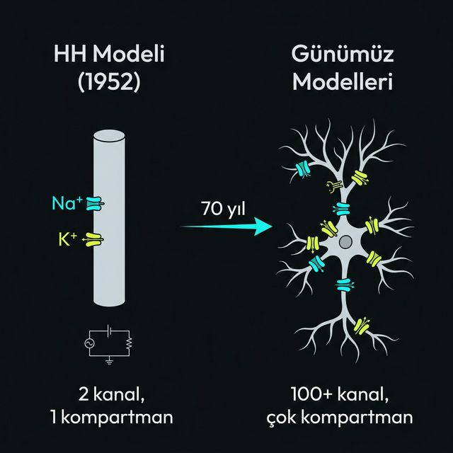

HH modeli nörobilimin temel taşı — ama 1952'de kalamar aksonuyla başlayan bu model gerçek nöronun tüm karmaşıklığını taşımıyor.
Aksiyon potansiyelinin şeklini mükemmel üretiyor. Refraktör periyodu, iletim hızı ve kapı değişkenlerinin davranışı — hepsi denklemlerden çıkıyor. Biyolojiyi görmeden tahmin edilen m³h ve n⁴ değerleri sonradan doğrulandı.
Tek kompartmanlı — dendrit, soma ve akson farkını görmüyor. Gerçek nöronda 100+ farklı kanal tipi var, HH sadece ikisini modelliyor. Sinaptik girdi ve nöronal ağ dinamikleri tamamen dışarıda.
HH'nin mantığı korundu — üzerine çok kompartmanlı yapı, onlarca kanal tipi ve sinaptik dinamikler eklendi. Hesaplamalı nörobilimin temeli hâlâ bu denklemler, sadece çok daha büyük bir sistemin parçası olarak.
HH bir iskelet — doğru ama eksik. Günümüz modelleri aynı iskeleti koruyor, üzerine gerçek nöronun karmaşıklığını inşa ediyor.
